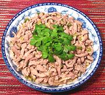

|
Pork with Scallion SauceChina - Fujian | ||||
| Serves: Effort: Sched: DoAhead: |
2 main ** 35 min Prep |
This very interestingly flavored dish from eastern China is simple and easy to make. Prep time is almost entirely for slicing the pork, which can be done well ahead. | |||
|
1 1/8 ------ 1/2 1 1/3 2-1/2 1/2 1/4 1/2 ------ 2 |
# in --- c t c T t t t --- T |
Pork, lean Ginger Root -- Sauce Scallions Soy Sauce Stock (1) Rice Vinegar (2) Five Spice (3) Sugar Salt --------- Oil |
Prep - (25 min)
|